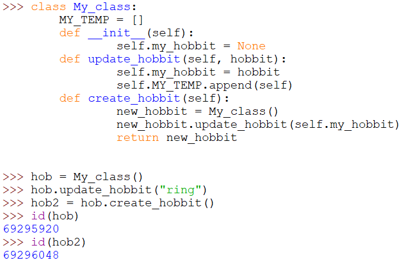

אני מנסה לבצע את הדבר הבא:
בתוך אחת הפעולות של מחלקה, אני רוצה ליצור מופע חדש, אשר יכיל ‘צילום’ נוכחי של כל האטריביוטס של המחלקה. לדוגמא
‘’’
class My_class:
def init(self):
self.my_hobby = None
מה שקורה לי זה שברגע יצירת המופע, האטריביוטס של המחלקה מתאפסים. ואני לא מצליח למצוא דרך לבצע זאת, אם יש כזאת…
תודה לעונים
orpazf
אני רק ארמוז שיש מודול שיכול לסייע בנושא ולהפוך את זה למאוד פשוט
(וגם זה אפשרי דרך מחלקות, אני לא לגמרי בטוחה מה סיבך אותך שם)
gonny
אני בכלל לא הבנתי מהקוד שלך מה אתה מנסה לעשות.
בcreate_hobby אתה מכניס מידע ולא מעתיק את המידע שקיים (“צילום”), אז למה אתה לא מייצר את האובייקט עם המידע הזה מראש?
zurikarat
להוסיף שני קווים תחתונים לפני my_hobby שבפונקציה?
koby
זאת רק הדגמה שכתבתי כדי להבהיר את כוונתי. מן הסתם הסתם יכולים להיות המון אטריביוטס שמשתנים כל הזמן.
אני מנסה ליצור אובייקט של המחלקה ש’מצלם’ את מצבה הנוכחי, לפני ביצוע השינויים באטריביוטס שלה
koby
לחזור לערמת השחת הזאת זה אף פעם לא פשוט
בעיקרון זה מה שסיבך אותי:
אני לא רואה איפה ניסיון ההעתקה. המצב הוא כזה: אתה יוצר אובייקט ללא תחביב, ואז קורא למתודה שמעדכנת את התחביב של האובייקט (לכן ההדפסה הראשונה היא שחיה). אח"כ אתה מוסיף לרשימה אובייקט חדש ללא תחביבים
koby
הסוף של מה שרשמת הוא הניסיון, מן הסתם כושל. אני מנסה למצוא דרך להוסיף לרשימה אובייקט עם האטריביוטס הנוכחיים. ניסיתי לעשות ככה:
אבל אז כל שינוי שמבוצע כמובן משפיע על האובייקט שנשמר, אז זה חסר תועלת…
orpazf
מה שעשית פה זה להוסיף לרשימה את self ומעולם לא יצרת אובייקט נוסף, רק את a
koby
אני יודע… לכן אני שואל, איך אני יוצר אובייקט נוסף שמכיל בתוכו את האטריביוקס בערכם הנוכחי בזמן יצירתו…
orpazf
למשל שולח דרך init את כל השדות שהוא אמור לקבל בערכם המעודכן, ואז מעדכן את כל שאר השדות בזה אחר זה - תוך ניצול העובדה שאתה יודע מה כל השדות של המחלקה כי אתה בתוך המחלקה.
לייק 1
koby
לא נראה לי שהבנתי למה את מתכוונת. יש לך דרך להדגים לי על הדוגמה שלי?
koby
ואגב, בנוגע לרמז שלך, אם אפשר לקבל עוד רמז…
זה קשור לסוג של ‘צילום מצב’ באופן כללי, או נטו למחלקות? רק כדי לצמצם לי מעט את רדיוס החיפוש…
orpazf
מכיוון שאין לי את הקוד שלך לקחתי לעצמי חופש אמנותי בכתיבת דוגמא - הפרדתי לשתי מתודות למרות שזה לא הכרחי. שים לב שבבדיקה למטה רואים שיש הבדל בין hob לבין hob2

לייק 1
orpazf
לכל דבר, לא רק למחלקות
koby
אם אני מבין נכון את הדוגמה, אז במצב של 10 אטריביוטס שונים, אני צריך להעביר את כולם, נכון?
orpazf
כן. לכן כדאי לך לחפש את המודול הנכון שהופך את זה לעבודה של שורה
koby
אם זה מתכתב עם להקת רוק אייקונית, אז מצאתי
gonny
יש לך usecase אמיתי שאתה מנסה לפתור? לא זכור לי שבאחד התרגילים הייתי צריך להעתיק instance של אובייקט קיים ואז לשנות חלק ממנו.
koby
יש. זהו פתרון אפשרי לפעולה נדרשת באחד התרגילים. לא הכרחי לביצוע הפעולה, מאחר שניתן לבצע אותה בדרכים נוספות ומוכרות יותר. אבל כן משהו שלדעתי היה כדאי לי להתעכב עליו בהסתכלות לעתיד…


{kind=link}